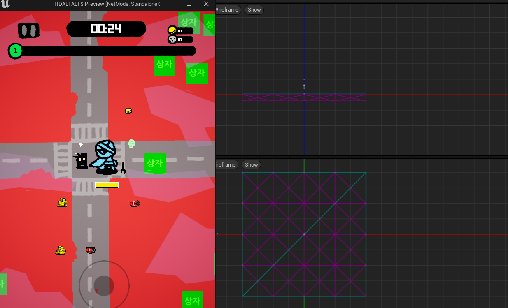

본문으로 건너뛰기
i
p
작품
활동
제작 기록
프로필
in
← 프로젝트 기록
ARCHITECTURE / Mega Road Clone - Unreal
// R&D · architecture
Mega Road Clone
Unreal · Cross Porting
· Ported a Unity game project to Unreal Engine
Unreal Engine 5
UDataTable
Spine

Contribute
· UDataTable을 이용한 게임 데이터 로드
· Spine을 이용한 애니메이션 설정